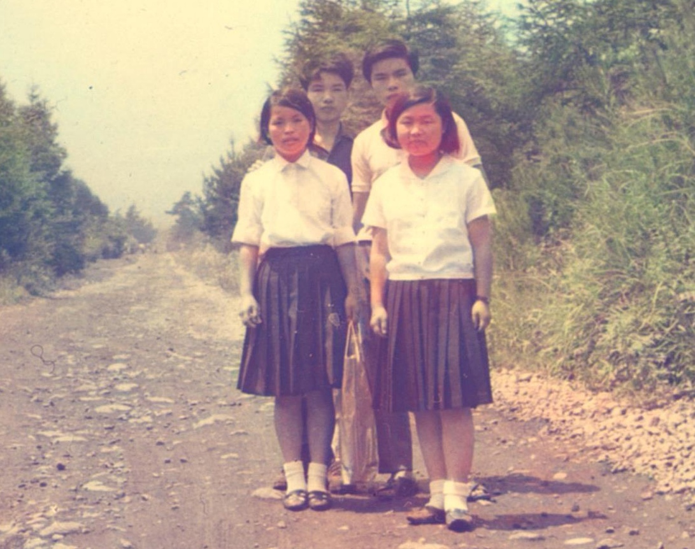

「中島家メモリアルサイト」へようこそ
このサイトは、私達家族や兄妹、そして親族の皆さんが、いつでも気軽に集い、南相木村田屋をルーツとして、共に歩んできた大切な思い出を振り返ることができるように開設したメモリアルサイトです。
このサイトでは、ルーツの源である田屋に三百年受け継がれてきた大樹の「老松の歌」をはじめ、父と母の生い立ちや人生の歩みを、音声でお聴きいただけます。また、以前発行した父と母の自分史『春秋の記』とあわせてご覧いただくことで、より深く二人の歩みを感じていただける内容となっています。
遠く離れて暮らしていても、このサイトを開けば、いつでもふるさとや家族、そしてルーツとのつながりを感じていただけることを願っています。
このサイトが、家族や親族の絆を深め、懐かしい思い出を語り合い、次の世代へと受け継いでいく場として、末永く親しまれることを願っています。
中島家思い出写アルバム

中島家思い出写アルバム
1 / 23
中島家ルーツの音楽館
選択待機中
作品を選択してください
下のカテゴリーからお好みの音声・動画を選択して再生いただけます。
中島家ルーツの音楽館
両親の生い立ちや『老松の歌』など、中島家に受け継がれる音声を聴くことができます。
中島家ルーツのムービー
父と母の自伝絵解き動画や『老松の歌』、ゆかりの地の映像記録など、中島家の足跡とルーツを動画でお楽しみいただけます。
地域の暮らしと文化
南相木村や佐久地域に伝わる歴史や風習の記録です。